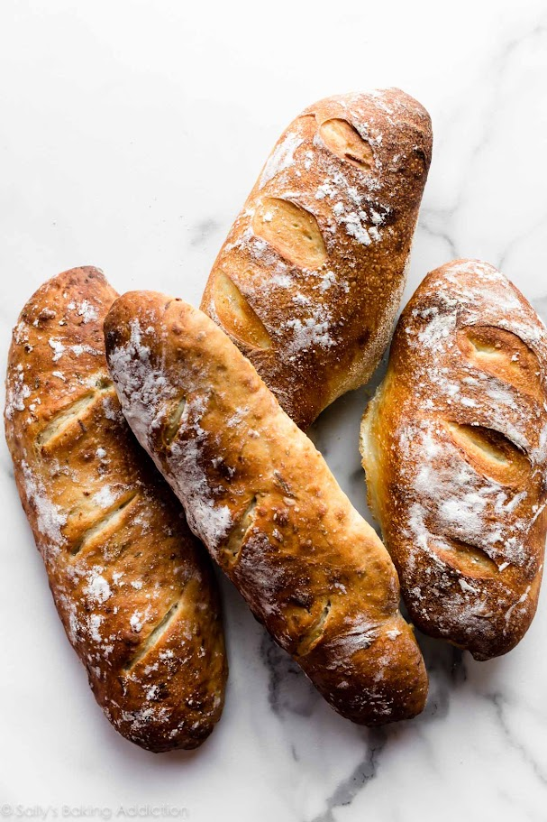

Domaci kruh jedan je od najjednostavnijih recepata koji mozemo pripremiti kod kuce. Potrebno je samo nekoliko osnovnih sastojaka, malo vremena i strpljenja
Kolicina vode moze se malo prilagoditi ovisno o vrsti brasna. Omjer vode i
brasna moze se zapisati kao voda / brasno.
Za ovaj recept koristimo priblizno 60% vode u odnosu na kolicnu brasna

temperetaura pecenja moze biti 220 oC. Vrijeme pecenja ovisi o velicini kruha.
Tijesto treba biti mekano i lagano ljepljivo. Ako je tijesto pretvrdo, potrebno je dodati malo vode. Ako je previse ljepljivo , moze se dodati mala kolicina brasna.
"Dobar kruh trazi samo nekoliko sastojaka, ali najvise strpljenja"
Stara kuhinjska izreka
Ako zelite nauciti vise o pecenju kruha, posjetite stranicu o kruhu
Kemijska formula vode je H2O, a temperetaura od 100oC predstavlja pribliznu tempereaturu vrelista vode pri normalnom atmosferskom tlaku.
Jednostavan postupak za provjeru je: umjesi - ostavi - oblikuj - ispeci
Dobar tek!